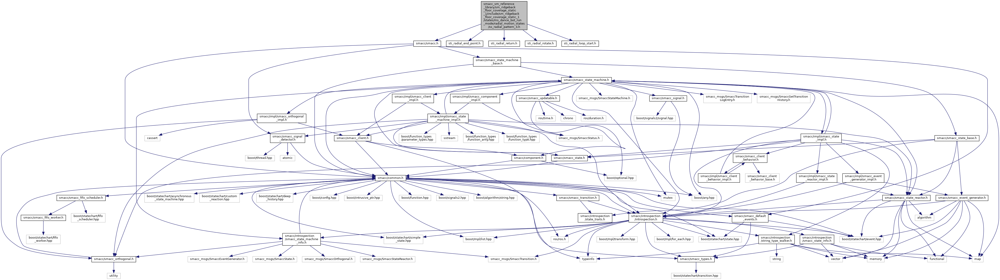

#include <smacc/smacc.h>#include "sti_radial_end_point.h"#include "sti_radial_return.h"#include "sti_radial_rotate.h"#include "sti_radial_loop_start.h"
Include dependency graph for ss_radial_pattern_3.h:

This graph shows which files directly or indirectly include this file: